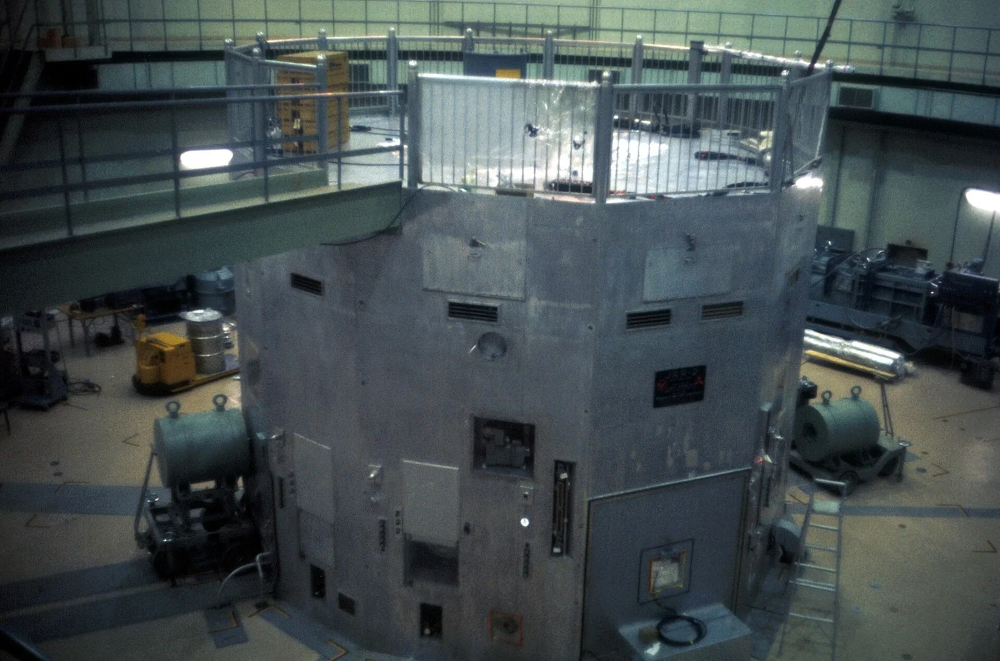
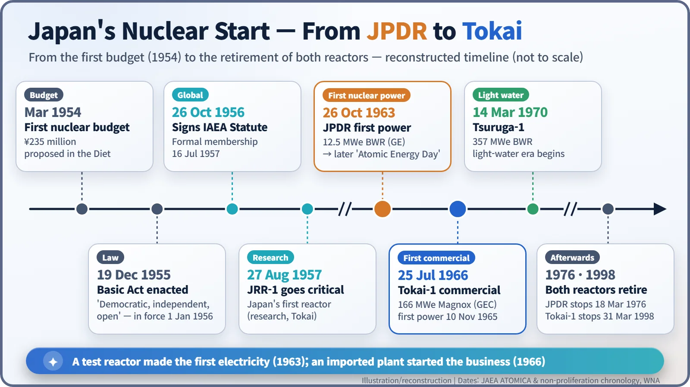
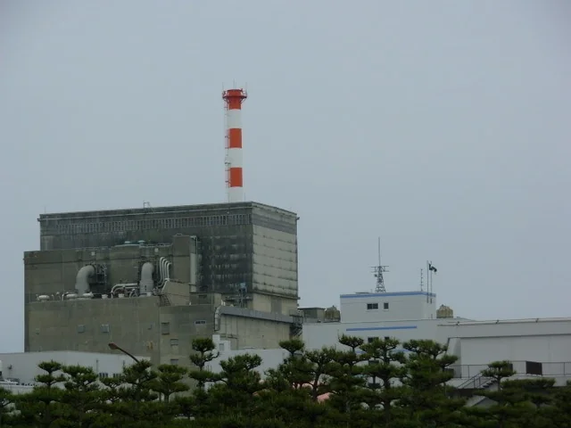
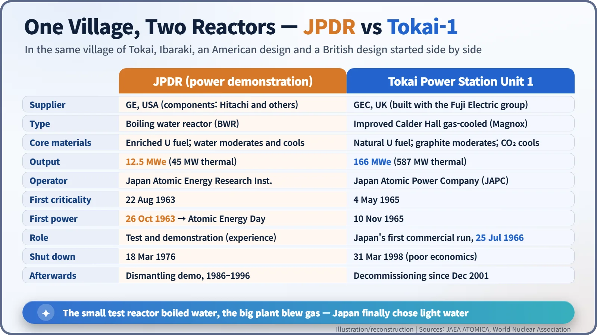
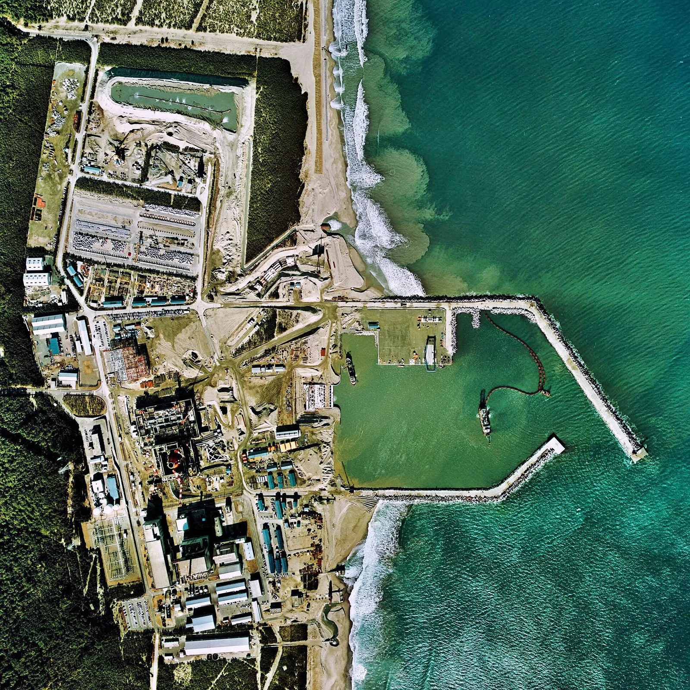

Nuclear History · 192
Why 26 October Is Japan's "Atomic Energy Day" — JPDR's First Power (1963) and Tokai-1 (1966)
A boiling water test reactor made Japan's first nuclear electricity; an imported British gas-cooled reactor next door started the industry.
On 26 October 1963 a small GE-designed boiling water reactor called JPDR, at the Japan Atomic Energy Research Institute in Tokai village, produced Japan's first nuclear electricity, and the date became the country's "Atomic Energy Day". Three years later the British-designed Magnox reactor Tokai-1 next door became Japan's first commercial nuclear plant, before Japan turned decisively to light-water reactors.
Saturday, 26 October 1963
The village of Tokai in Ibaraki Prefecture. Among the seaside pines on Japan's Pacific coast stood the Japan Atomic Energy Research Institute (JAERI). There, a small reactor designed by America's General Electric boiled water into steam, the steam spun a turbine, and Japan produced its first nuclear-generated electricity. The reactor was JPDR, the Japan Power Demonstration Reactor. The following year the government named the date "Atomic Energy Day". [1] [2]

From bomb victim to reactor builder
Japan moved faster than many people expect. In March 1954 a group of Diet members including Nakasone Yasuhiro (1918–2019) pushed through an emergency nuclear budget of ¥235 million. It is often said that the figure was chosen to echo uranium-235, but that is best treated as a story often told rather than an established fact. The same year, a Japanese fishing boat was caught in fallout from an American H-bomb test at Bikini, and anti-nuclear feeling ran high. On 23 April 1954 the Science Council of Japan rejected nuclear weapons and called for nuclear research to be independent, democratic and open. [3]
Those principles went into the Atomic Energy Basic Act, promulgated on 19 December 1955 as "democratic, independent and open" and in force from 1 January 1956. The first chairman of the new Atomic Energy Commission was Shōriki Matsutarō (1885–1969), owner of the Yomiuri newspaper and a cabinet minister. JAERI was founded at Tokai in June 1956, and on 27 August 1957 its research reactor JRR-1 went critical, the first reactor to do so in Japan. [1] [3]
The first electricity came from boiling water
Research reactors do not make electricity, and Japan wanted hands-on experience of building and running a power reactor. On 30 August 1960 JAERI signed a contract with GE for JPDR. GE handled the design and fuel fabrication, while Japanese firms such as Hitachi built much of the equipment. [1]
JPDR was a boiling water reactor (BWR) of 45 MW thermal and 12.5 MW electrical output. Think of it as a giant pressure cooker that drives an engine: the heat of fission boils water inside the reactor vessel, and the steam goes straight to the turbine. The water does two jobs at once. It slows the neutrons down (the moderator) and carries the heat away (the coolant). JPDR first went critical on 22 August 1963, and two months later, on 26 October, it delivered its first power. [1] [4]
The date was chosen partly by coincidence. Seven years earlier, on 26 October 1956, Japan had signed the Statute of the International Atomic Energy Agency (IAEA). The day is often described as the day Japan "joined" the IAEA, but formal membership came on 16 July 1957, so the accurate word is "signed". [2] [3]

The big brother from Britain: Tokai-1
At the same time, the government argued over strategy. Kōno Ichirō (1898–1965), head of the Economic Planning Agency, favoured building up Japan's own technology, while Shōriki argued for importing a proven commercial reactor quickly. The importers won. The Japan Atomic Power Company (JAPC) was set up in November 1957, and with Shōriki's backing an improved version of Britain's Calder Hall reactor was chosen. [1]
Tokai-1 burned natural uranium, used graphite to slow the neutrons and blew carbon dioxide gas through the core to carry the heat away. It is often called a Magnox reactor, after the magnesium-alloy cans that clad the fuel. At 166 MW electrical, it was about 13 times the size of JPDR. Its core was given extra earthquake resistance to suit Japan, and it was built by Britain's GEC together with the Fuji Electric group. Construction began in March 1961; it went critical on 4 May 1965, first generated power on 10 November 1965, and on 25 July 1966 became Japan's first nuclear plant in commercial operation. [1] [5]


Why the first commercial plant was also the last gas-cooled one
Even before Tokai-1 was finished, the tide had turned. American light-water reactors were judged more compact and cheaper to build, with more room to grow in size. JAPC itself switched to light water in September 1965, and its Tsuruga-1 (a 357 MW BWR) entered commercial operation on 14 March 1970. From then on, every commercial nuclear plant built by Japan's power companies was a light-water reactor. [1]

Both reactors also ended with a "first". JPDR was modified to double its thermal power to 90 MW, but cracked piping and other faults kept it from ever reaching full output, and it shut down on 18 March 1976. It then became Japan's first full demonstration of dismantling a reactor, from 1986 to March 1996. Tokai-1, no longer economical, ended 32 years of commercial operation on 31 March 1998 and in December 2001 became the first Japanese commercial plant to start decommissioning. [1] [4] [5]
In short, Japan learned the technology on a small test reactor and started the industry with an imported commercial plant. Caught between the memory of the bombs and a lack of domestic energy resources, it entered the nuclear age under the banner of "peaceful use". 26 October is the name tag pinned to that starting line.